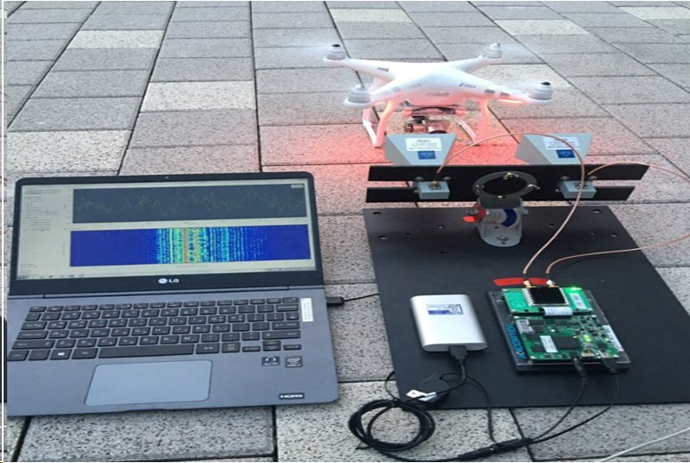

연구실적 · 국내전문학술지
레이다 기반의 드론 탐지 기법 연구
Research on the drone detection based on the radar

초록
오늘날 드론의 대중화와 드론 관련 산업의 확장 등으로 인하여 드론 보급이 민 군에 걸쳐 증가하였고, 이와 더불어 보안, 안전사고, 치안‧안보 위협 등의 우려도 함께 커지고 있다. 드론은 크기가 작고 반사도가 낮은 재질로 되어 있어 일반적인 센서로는 탐지가 어려운 것으로 알려져 왔다. 이에, 드론으로 인해 발생하는 사건 및 사고를 예방하기 위해서는 드론의 탐지와 위험 요소에 대응할 수있는 기술에 대한 연구가 선행되어야 한다. 본 논문에서는 드론 탐지 기법을 분류하였다. 또한 CW 레이다를 기반으로 한 드론 탐지실험을 통해, 마이크로 도플러의 패턴을 분석하여 드론 탐지의 가능성을 제시한다.
사이트 원문 표기
문민정 (Minjung Moon), 송경민 (Kyungmin Song), 유수진 (Sujin Yu), 심현석 (Hyunseok Sim), 이우경 (Woo-Kyung Lee), “레이다 기반의 드론 탐지 기법 연구”, 한국위성정보통신학회논문지, 제12권 2호, 2017년